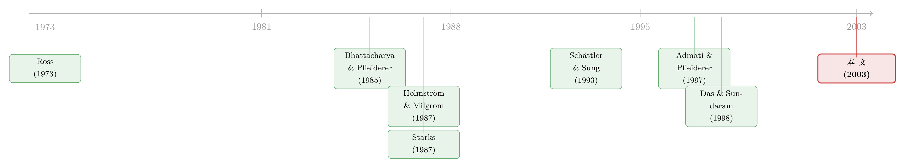

一条法律规定基金经理的奖罚必须对称，可最优合约偏偏是「不对称」的
本文读的是 Ou-Yang (2003, Review of Financial Studies)：在一个连续时间的委托—代理框架里，把基金经理的最优薪酬合约求成闭式解。结论有两点反直觉——其一，最优合约是不对称的（一头奖、一头罚的力度并不相等），这与 1970 年美国法律强制的「对称激励费」相左；其二，合约里那个用来比对业绩的基准，应该是一个主动指数（持股数随时间变动），而不是教科书里默认的被动指数（持股数固定不变）。
1 一条法律，和一个没人回答的问题
先讲一个制度上的小故事。
1970 年，美国国会通过了《1940 年投资顾问法》的一项修正案（下称「修正案」）。它管的是一件很具体的事：如果一只公募基金、养老金或别的注册投资公司，要用「跟基准挂钩的业绩费」来给自己发薪，那么这套费用必须围绕基准对称。换句话说，如果你的组合跑赢了基准、能拿奖金，那你跑输基准时，就必须挨同等力度的罚。在此之前（1970 年以前），业内通行的是另一种玩法：跑赢了拿奖金，跑输了——不罚。一头甜、一头不苦，这正是后来被称作「期权式」的不对称合约。
立法者的直觉很朴素：不对称的合约会诱使经理去赌——反正下行不挨罚，那就把波动率往上拱，赌赢了分钱，赌输了是你（投资者）的。对称，听上去更「公平」、更「稳健」。
但一个自然的问题是：这条强制对称的法律，在现代金融经济学里到底站不站得住脚？ 它是「最优的」，还是仅仅是一种听上去合理、却从未被严格证明过的监管直觉？
这个问题尴尬地悬了三十年。尴尬之处在于：要回答它，你得先知道到底什么才是最优合约——也就是说，你得在一个足够大的合约空间里，把投资者和经理两方的动态最优化问题同时解出来，看看那个真正最优的合约长什么样，再回头去比对「对称」这个约束。而在 Ou-Yang 这篇文章之前，没有哪个模型做到过这一点。
本文做的，就是这件事。
2 为什么以前的模型「够不着」这个问题
要理解这篇文章的贡献，得先看清楚以前的模型卡在哪。
委托—代理 (principal-agent) 问题在连续时间里早有成熟的工具，最有名的是 Holmström and Milgrom (1987)，以及后来的 Schättler and Sung (1993)、Sung (1995)。但这些模型有一个共同的、致命的结构性限制：代理人的行动只影响产出过程的漂移率 (drift)，不影响扩散率 (diffusion)。
用大白话说：在经典模型里，代理人「努力」改变的是结果的期望（平均能产出多少），但结果的波动（风险有多大）是外生给定、雷打不动的。Sung (1995) 走得稍远一点，让代理人能分别控制漂移和扩散——但那是两个独立的控制变量：你拨漂移的时候扩散被摁住不动，拨扩散的时候漂移被摁住不动。
可是，投资组合管理压根不是这么回事。
这才是全文的「题眼」。一个基金经理做的唯一一件事，就是决定往每只股票里投多少钱——记成一个美元持仓向量 \(A(t)\)。而一旦他动了 \(A(t)\)，组合财富的漂移和扩散会同时改变，而且改变它们的是同一个 \(A(t)\)。把财富过程写出来就一目了然：
$$dW(t) = \left[\,rW(t) + A^{T}(t)h\,\right]dt + A^{T}(t)\sigma\, dB_t$$
这里 \(h \equiv (\mu - r\mathbf{1})\) 是股票的超额收益向量，\(\sigma\) 是波动率矩阵，\(B_t\) 是标准布朗运动。看这个式子：\(A^{T}(t)h\) 坐在漂移项里，\(A^{T}(t)\sigma\) 坐在扩散项里——同一个 \(A(t)\)，一手托两家。经理多买一点高 beta 的股票，组合的期望收益涨了，可它的波动也同时涨了，二者由同一个决策捆死，不可能分开调。
这正是「投资」区别于「努力」的地方。流水线工人多流一滴汗，产出的均值上去了，方差大体不变；基金经理多压一注，收益的均值和方差是绑在一根杠杆上一起动的。经典代理模型处理不了这种「一个动作同时拨两个旋钮」的结构，所以它们根本无法被搬到组合管理上来——这不是技术细节，而是把旧框架挡在门外的那道墙。
于是 Ou-Yang 要做的，本质上是把委托—代理理论往前推一步：允许代理人的行动同时进入漂移与扩散。这一步迈出去，组合管理问题才第一次有了一个能容纳「持股型基准」「对称费」的合约空间，进而才谈得上去检验那条法律。
3 模型：把合约写成一个随机积分
接着，我们把舞台搭起来。
经济体很简单。一个委托人 (principal，即投资者) 在 \(t=0\) 把财富 \(W(0)\) 交给一个代理人 (agent，即基金经理)，到 \(t=T\) 收回 \(W(T)\)；中途不许追加也不许赎回。市场上有一只无风险债券（利率 \(r\) 为常数）和 \(N\) 只不分红的风险股票，每只股票的价格服从几何布朗运动：
$$dP_i(t) = P_i(t)\,\mu_i\, dt + P_i(t)\,\sigma_i\, dB_t$$
经理连续地调仓，决定 \(A(t)\)。冲突从哪来？ 投资者看不到 \(A(t)\)。注意这里有一个很精巧的信息设定：如果投资者能同时连续地观测股价 \(P(t)\) 和组合净值 \(W(t)\)，他就能从二者的瞬时协方差里精确反推出经理的持仓 \(A(t)\)——那就没有代理问题了。所以文章必须假设：投资者能连续看到股价，但只能在终点 \(T\) 看到组合的净值。这对应现实——股价随手可查，可一只共募/养老基金的「分分钟净值」你是看不到的，只能等收盘。于是合约只能写成 \(\{t, P(t)\}_{t\in[0,T]}\) 和 \(W(T)\) 的函数。
代理人的偏好是负指数效用（为可解性）：\(U_a = -\frac{1}{R_a}\exp[-R_a W_a(T)]\)，\(R_a\) 是常数风险厌恶系数。
然后是全文最关键的一个建模选择——合约空间长什么样。文章把投资者能写给经理的合约 \(S\) 设成如下形式：
为什么这个合约空间是突破？因为它头一次把「持股型基准」装了进来。看最后那一项 \(\int_0^T \psi_2\, dP(t)\)：如果令 \(\psi_2\) 是一个负的常数向量，它正好就是一个被动指数——每只股票里押的份数固定不变，跌价就扣你钱。而如果允许 \(\psi_2\) 随 \(t,W,P\) 变动，基准里每只股票的「份数」就会随时间变——这就是主动指数。前者，正是修正案默许、业界惯用的那种基准；后者，是单期模型里根本写不出来的东西（单期里经理只投一次，谈何「份数随时间变」）。文章把两者都纳入同一个合约空间，再去解谁最优——这是它能正面回答「对称费是否有效率」的前提。
顺带一提：合约里 \(\int \psi_1\, dW\) 这三项的前身来自 Schättler and Sung (1993)，而最后那个 \(\int \psi_2\, dP\) 项是审稿人建议加的——正是它，把修正案允许的那种对称业绩费结构「请」进了模型。一个脚注，藏着这篇文章问题意识的来路。
4 两方的最优化，必须一起解
有了合约，两个最优化问题就立起来了。
代理人拿到合约 \(S\) 之后，挑 \(A(t)\) 最大化自己的期望效用（扣掉管理成本 \(c\)）：
$$\sup_{\{A(t)\}}\; E\left[-\frac{1}{R_a}\exp\left(-R_a\Big(S - \int_0^T c(t,A(t),W(t))\,dt\Big)\right)\right]$$
$$\text{s.t.}\quad dW(t) = \left[\,rW(t)+A^{T}(t)h\,\right]dt + A^{T}(t)\sigma\, dB_t$$
委托人则反过来，挑合约 \(S\) 和她希望经理执行的策略 \(\{A(t)\}\)，最大化自己对终端财富 \(W(T)-S\) 的期望效用，受制于两条约束：(i) 经理的参与约束——合约至少要给够保留效用 \(-\frac{1}{R_a}\exp(-R_a\Phi_0)\)，否则经理不接活（这条约束在最优处一定紧绑，否则投资者总能把薪水再压低一点）；(ii) 激励相容约束——投资者钦定的那个策略 \(A^*(t)\)，必须真的也是经理自己解出来的最优策略。
这里有一句话要反复咀嚼：这两个问题不能分开解。 经理的合约取决于他的行动，他的行动又取决于合约。投资者写合约的时候，必须把「经理会怎么对我的合约做反应」这件事预判进去；经理选仓位的时候，又是在我已经写好的合约下选。它们是一个联立的不动点。文章的技术核心，就是用代理人的贝尔曼方程 (Bellman equation)、参与约束、伊藤引理 (Itō's lemma) 外加一个变换，把这个联立问题「解开」，得到一个用代理人值函数 \(V\)、以及 \(\psi_1,\psi_2\) 表示的均衡费用表达式 \(S(T)\)。
（关于「在连续时间里，贝尔曼方程何时既是必要也是充分条件」这一技术地基，文章专门用一个附录做了证明——这类「先把工具的合法性钉死，再去用它」的做法，和《把投资组合的「天书」解到只剩一个常微分方程》里处理动态组合问题的精神是一脉相承的。）
我把推导的逻辑链拎成三步，方便你抓住骨架：
- 第一步，写出代理人值函数 \(V(t,W,P)\) 满足的 HJB 方程。由于 \(A\) 同时进漂移和扩散，这个方程里 \(A\) 出现在好几处——既有线性项 \(A^T h\)，也有二次项 \(A^T\sigma\sigma^T A\)，还和 \(\psi_1,\psi_2\) 交叉耦合。对 \(A\) 求一阶条件，解出经理的最优仓位 \(A^*\)。
- 第二步，把参与约束（在最优处紧绑）代进去，借助负指数效用「把常数从期望里提出来」的良好性质，加一个变换，得到均衡费用 \(S(T)\) 的闭式表达。
- 第三步，回到委托人的问题。当投资者也是指数效用、且用一类特定成本函数时，她的问题也能闭式求解；若投资者效用是一般形式，则在「经理成本为常数」这个特例下同样能闭式求解。两条路都通向同一个定性结论。
5 反转：最优合约偏偏是「不对称」的
于是反转出现了。
把两方问题一起解出来，最优合约的形状是这样的——经理应当拿到：
- 一笔固定费；
- 管理规模 (assets under management) 的一个比例；
- 外加一份奖金或罚金，取决于组合相对基准的超额收益。
到这一步还没什么稀奇。真正的两记重拳在后面：
第一拳——这份合约是不对称的。 也就是说，跑赢基准拿奖金的力度，和跑输基准挨罚金的力度，并不相等。这恰恰违反了修正案强制的对称要求。文章的潜台词很硬：立法者「对称才公平、才稳健」的直觉，在一个把投资者和经理两方动态最优化都算到底的框架里，得不到支持——最优的激励，天然是不对称的。监管把所有人摁成对称，等于强行偏离了最优。
第二拳——基准应该是主动指数，不是被动指数。 还记得合约里那个 \(\int_0^T \psi_2\, dP\) 项吗？最优解里的 \(\psi_2\) 不是常数，它随时间、随财富、随股价变动。翻译过来：合适的业绩基准，是一个「每只股票的持有份数会随时间漂移」的主动指数，而不是业界天天拿来当尺子的那种「份数钉死」的被动指数（如指数基金）。这一点，单期模型永远看不见——因为在单期里经理只投一次，基准的「份数随时间变」无从谈起。是「连续时间 / 多期」这个设定，把主动指数从藏身处逼了出来。
为什么必须是主动指数？直觉是这样：经理的最优持仓 \(A^*(t)\) 本身就是随市场状态动态变化的；要让基准真正起到「过滤掉经理无法控制的共同风险、只奖励他真正的选股/择时」的作用，这把尺子也必须跟着状态一起动。拿一把刻度固定的尺（被动指数）去量一个动态的东西，量出来的「超额」里就会混进本不该奖罚经理的成分。
别误读成「不对称费一定让经理乱赌」。Grinblatt and Titman (1989) 早就指出：给定期权式不对称合约，若经理能对冲自己的薪酬，他会去拉高基金波动率。但 Carpenter (2000) 反过来证明：若经理不能对冲，期权式薪酬未必带来更强的冒险。Ou-Yang 的贡献不是站某一边，而是干脆把合约的形状内生地解出来——不对称是最优化的产物，不是外生强加的赌局。
6 文献脉络
把这条线索捋一捋，你会更清楚这篇文章站在哪。
源头是代理理论本身：Ross (1973) 第一次把「委托人问题」写成经济学，奠定了之后一切讨论的语言。到了投资管理这个具体场景，早期工作是单期/离散时间的：Bhattacharya and Pfleiderer (1985) 把委托组合管理写成模型；Starks (1987) 正面比较对称与不对称合约，得到一个和本文相反的结论——她认为对称合约在「诱导经理选投资者想要的策略」上占优；Stoughton (1993) 则在道德风险框架里研究线性与二次合约对投资者福利的影响。

接着，连续时间委托—代理的工具成熟了：Holmström and Milgrom (1987) 的线性合约结果，以及 Schättler and Sung (1993)、Sung (1995) 的推广——但如前所述，它们都只让行动影响漂移，搬不到组合管理上。
与此同时，关于「基准」的争论烧得正旺。Admati and Pfleiderer (1997) 在线性对称合约的单期设定里给出一个尖锐结论：拿一篮子风险资产（如指数基金）当业绩基准，很难被合理化。这个结论政策含义很重——它直接挑战了「用风险资产组合当基准」的业界惯例。但 Admati–Pfleiderer 的目的不是去找最优合约，所以他们没有给出替代基准。Ou-Yang 这篇文章恰好补上了这一刀：在多期关系里，风险资产基准的空间被放大了，不仅装得下被动指数，还装得下单期里看不见的主动指数——而最优基准，正是后者。另一条平行的争论是 Das and Sundaram (1998)，他们在单期三状态的风险分担模型里发现对称合约缺乏正当性，并给出不对称合约 Pareto 占优的条件——在「不对称」这个落点上，本文与他们殊途同归。
所以本文的位置很清楚：它是第一个在足够大的合约空间里、用连续时间把投资者与经理两方最优化联立解出闭式最优合约的工作，并以此正面回应了悬置三十年的「对称费是否有效率」之问。
（这条「把激励内生进资产决策」的脉络，在本博客里还有不少邻居：均衡层面可参见《老板的奖金，定不了股票的「期望收益」，却定得了它的「价格」》；资本结构与薪酬同解可参见《给「好经理」配高杠杆》；逆向选择 + 道德风险下合约形状的翻转，则见《当老板既藏着本事、又能挑风险》。）
7 评论与延伸（Q&A + 研究方向）
(a) 几个可能的疑问
Q：这篇是纯理论，没有数据，那它的「不对称」结论凭什么比立法者的直觉更可信？
凭的是「内生」二字。立法者的对称直觉是一个外生的规范判断；本文则把投资者和经理的动态最优化都算到底，让合约的形状从最优化里自己长出来。当一个被严格求解的最优合约系统性地呈现不对称，而法律强制对称时，举证责任就翻转到了「为什么要偏离最优」这一边。当然，这一切都建立在模型假设（指数效用、不可对冲薪酬、特定成本函数）之上——它证明的是「在这套合理的假设下对称并非最优」，而非「对称在任何世界里都错」。
Q：为什么基准非得是「主动指数」？被动指数（指数基金）到底差在哪？
差在「尺子会不会跟着动」。经理的最优仓位本身是随市场状态动态变化的；要让基准只奖励他真正的本事、滤掉他控制不了的共同风险，这把尺子也必须随状态而动，即 \(\psi_2\) 不是常数。被动指数把份数钉死，相当于拿一把刻度固定的尺去量一个动态对象，量出的「超额收益」里会混入本不该奖罚的成分。关键是：主动指数只有在多期/连续时间里才存在——单期模型里经理只投一次，根本写不出「份数随时间变」。
Q：本文与 Admati and Pfleiderer (1997)「风险资产基准难以合理化」是不是直接矛盾？
不是矛盾，是补全。Admati–Pfleiderer 是在单期、线性对称的合约里得到那个否定结论的，而且他们的目的不是找最优合约，所以没给替代品。本文把关系拉长到多期，基准的可行空间随之扩大——被动指数确实不好，但多期里多出来的主动指数可以被合理化，并且正是最优。可以说本文回答了 Admati–Pfleiderer 留下的那个空白：那「该用什么基准」？答案是主动指数。
Q：模型的「题眼」——行动同时影响漂移和扩散——真有那么关键吗，是不是技术上的小题大做？
是真关键，不是小题大做。Holmström–Milgrom 式模型里行动只动漂移，Sung (1995) 里漂移和扩散由两个独立控制变量分别管。但组合管理只有一个决策 \(A(t)\)，它一动，漂移项 \(A^Th\) 和扩散项 \(A^T\sigma\) 同时变。正是这个「一个旋钮拨两处」的耦合结构，让旧框架整个失效；本文的技术贡献，就是把这种耦合下的两方最优化求出闭式解。
Q：为什么模型要假设投资者「只能在终点看到净值」，这个设定是不是太刻意？
它刻意，但有现实根据，而且不可或缺。如果投资者能连续同时观测股价 \(P(t)\) 和净值 \(W(t)\)，他就能用二者的瞬时协方差 \(\text{diag}(P)\sigma\sigma^T A(t)\) 精确反推出 \(A(t)\)——代理问题瞬间消失。现实里股价随手可查，但共募/养老基金的「分分钟净值」你看不到，只能等收盘。所以「连续看股价、终点看净值」既贴合现实，又是让道德风险存活下来的最小设定。
Q：闭式解是不是靠「负指数效用」这种强假设硬凑出来的？换个效用还成立吗？
闭式解的确高度依赖负指数（CARA）效用——它的好处是能把确定性等价从期望里干净地提出来，消掉财富水平的影响。当投资者也是指数效用、配上一类特定成本函数时，全程闭式；若投资者是一般效用，则一般成本下问题变得不可解，文章只能退到「经理成本为常数」的特例求闭式解。所以「不对称 + 主动指数」这个定性结论是稳的，但具体函数形状对假设是敏感的——这是所有 CARA-Gaussian 类合约模型共同的软肋。
(b) 几个可能的研究问题与提案
1. 把「主动指数最优基准」搬到公司债基金上检验
【经济故事】本文说最优基准是份数随时间变的主动指数。公司债基金（尤其信用债）的业绩比对长期沿用固定权重指数，而信用债的久期、违约暴露随时间剧烈漂移——固定权重尺子的「失真」在信用市场可能比股市更严重。 【可行性】中。需要基金持仓（如 N-PORT/eMAXX）+ 债券层面的特征与回报（TRACE）。识别上可对比「用固定权重基准 vs 用动态再构造基准」算出的 alpha 差异，看哪一种与基金未来回报、资金流的关系更干净。难点是信用债基准本身的构造噪声大。
2. 不对称费 vs 对称费：用一次自然实验量「监管对称」的代价
【经济故事】本文暗示强制对称是对最优的偏离。若某个市场/某段时期对业绩费对称性的监管发生过外生变化，就能直接估计「被摁成对称」让投资者福利损失了多少、让经理冒险行为变了多少。 【可行性】低到中。难点是干净的政策断点稀缺——对称要求嵌在 1970 年的旧法里，跨期变动少。或可转向对冲基金（不受该约束、费用结构五花八门）与公募（受约束）的横截面对照，但选择性偏误严重，identification 偏弱，需诚实标注。
3. 当经理能对冲薪酬时，最优基准会怎么变？
【经济故事】Grinblatt–Titman 与 Carpenter 的分歧全在「能不能对冲薪酬」。本文假设不可对冲。一个自然延伸是：把经理可在外部市场对冲自身报酬这件事写进模型，看最优 \(\psi_2\)（即基准的主动程度）如何随对冲能力变化——很可能对冲能力越强，最优合约越要压低对波动的敞口。 【可行性】中。纯理论扩展，工具齐备（就在本文框架上加一个经理的私人对冲账户）。难在保持闭式解；多半要退而求数值解或特例。
4. 把外资持有人写进委托组合管理的均衡
【经济故事】本文是单投资者—单经理的局部均衡。若把它嵌入一般均衡，并区分本地与外资委托人（二者的观测能力、保留效用、税收不同），最优合约与最优基准会不会因投资者类型而分化？这能接上「外资是不是信息劣势方」的争论。 【可行性】中到低。需要把异质委托人 + 均衡资产价格一起解，技术上重；但定性问题（基准是否随投资者类型变）可在简化的两类投资者设定下先做出来。
8 我的判断
先说贡献。这篇文章最硬的东西不是某个数字，而是把一个悬了三十年的规范命题，第一次放进了一个能真正回答它的框架。它做对了三件别人没做到的事：(i) 让代理人的单一行动同时进入漂移与扩散，迈出了连续时间委托—代理理论实质性的一步；(ii) 设计了一个大到能同时容纳「被动指数」「主动指数」「对称业绩费」的合约空间；(iii) 把投资者与经理的联立动态最优化求出闭式最优合约。三件事叠起来，才支撑得起「对称费并非最优、最优基准是主动指数」这个干净而反直觉的结论。
再说担忧。第一，对函数假设的依赖。闭式解几乎完全靠 CARA（负指数）效用 + 高斯结构 + 特定/常数成本函数撑着；一旦投资者换成一般效用、成本换成一般形式，问题就不可解，只能退守特例。所以「不对称 + 主动指数」这个定性结论我信，但具体的奖罚力度、\(\psi_2\) 的具体形状，是高度模型依赖的，不宜直接拿去做政策标定。第二，信息设定的脆弱性。整个道德风险靠「投资者连续看股价、只在终点看净值」这一条假设撑着——这条假设很巧妙也很现实，但它意味着结论对「投资者到底能观测到什么」极其敏感；现实里净值披露频率一旦提高（如每日、甚至实时），代理问题的强度会塌缩，最优合约也会随之改写。第三，没有对冲、没有跳跃、没有职业生涯顾虑。文章自己在引言里把职业生涯顾虑、资金流、内部晋升都列为重要动机，但模型里一个都没装进去——它们恰恰是现实中扭曲经理冒险行为的主力。
最后说我想看到什么。我最想看的，是有人把这套理论的核心可证伪含义——「动态基准比固定权重基准更能解释基金的真实业绩与资金流」——拿去做一次干净的实证检验，且优先在公司债/信用市场做，因为那里固定权重基准的失真最严重。其次，我想看到把「经理可对冲薪酬」和「职业生涯顾虑」补进模型后，最优基准的主动程度会往哪个方向移——这两件事很可能正是现实中合约偏离本文「理想形状」的主因。理论给了一把漂亮的尺子，但尺子量没量准，还得让数据说话。
参考文献
- Admati, A. R., and P. Pfleiderer (1997). Does It All Add Up? Benchmarks and the Compensation of Active Portfolio Managers. Journal of Business 70, 323–350.
- Bhattacharya, S., and P. Pfleiderer (1985). Delegated Portfolio Management. Journal of Economic Theory 36, 163–187.
- Carpenter, J. I. (2000). Does Option Compensation Increase Managerial Risk Appetite? Journal of Finance 55, 2311–2331.
- Das, S., and R. Sundaram (1998). On the Regulation of Mutual Fund Fee Structure. Working paper, Harvard University and New York University.
- Grinblatt, M., and S. Titman (1989). Adverse Risk Incentives and the Design of Performance-Based Contracts. Management Science 35, 807–822.
- Holmström, B., and P. Milgrom (1987). Aggregation and Linearity in the Provision of Intertemporal Incentives. Econometrica 55, 303–328.
- Ou-Yang, H. (2003). Optimal Contracts in a Continuous-Time Delegated Portfolio Management Problem. Review of Financial Studies 16(1), 173–208.
- Ross, S. A. (1973). The Economic Theory of Agency: The Principal's Problem. American Economic Review 63, 134–139.
- Schättler, H., and J. Sung (1993). The First-Order Approach to the Continuous-Time Principal-Agent Problem with Exponential Utility. Journal of Economic Theory 61, 331–371.
- Starks, L. T. (1987). Performance Incentive Fees: An Agency Theoretic Approach. Journal of Financial and Quantitative Analysis 22, 17–32.
- Stoughton, N. (1993). Moral Hazard and the Portfolio Management Problem. Journal of Finance 48, 2009–2028.
- Sung, J. (1995). Linearity with Project Selection and Controllable Diffusion Rate in Continuous-Time Principal-Agent Problems. RAND Journal of Economics 26, 720–743.